Abstract: Our goal is for robots to follow natural language instructions like "put the towel next to the microwave." But getting large amounts of labeled data, i.e. data that contains demonstrations of tasks labeled with the language instruction, is prohibitive. In contrast, obtaining policies that respond to image goals is much easier, because any autonomous trial or demonstration can be labeled in hindsight with its final state as the goal. In this work, we contribute a method that taps into joint image- and goal- conditioned policies with language using only a small amount of language data. Prior work has made progress on this using vision-language models or by jointly training language-goal-conditioned policies, but so far neither method has scaled effectively to real-world robot tasks without significant human annotation. Our method achieves robust performance in the real world by learning an embedding from the labeled data that aligns language not to the goal image, but rather to the desired change between the start and goal images that the instruction corresponds to. We then train a policy on this embedding: the policy benefits from all the unlabeled data, but the aligned embedding provides an interface for language to steer the policy. We show instruction following across a variety of manipulation tasks in different scenes, with generalization to language instructions outside of the labeled data.
GRIF learns manipulation skills conditioned on either language or image goal task representations. By aligning equivalent tasks, our approach is able to learn to follow instructions from a small labeled dataset of trajectories and a much larger unlabeled or autonomously collected dataset.
 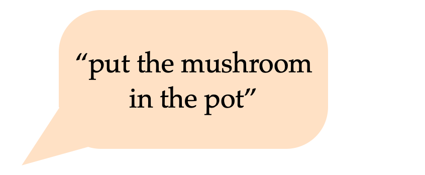
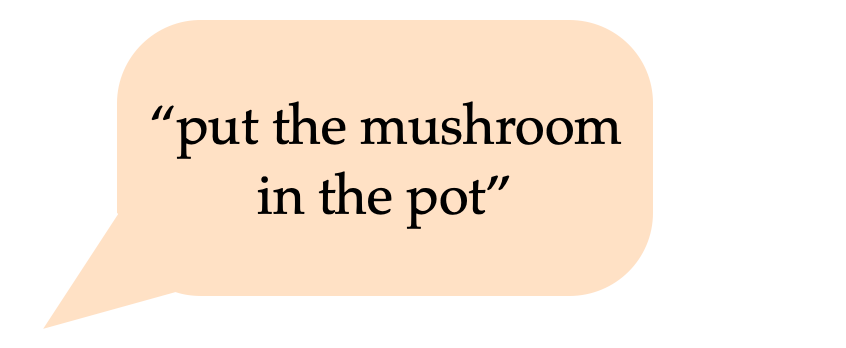
 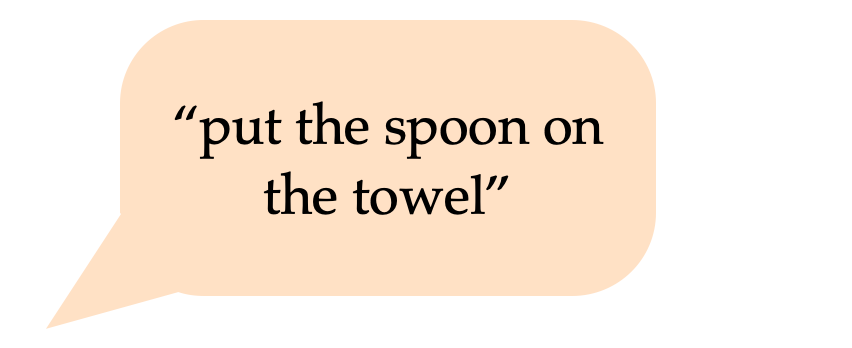
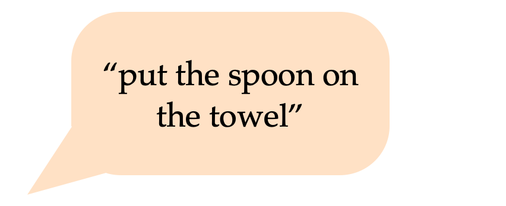
 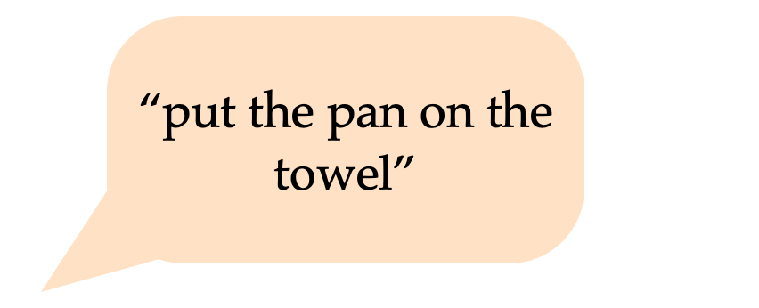
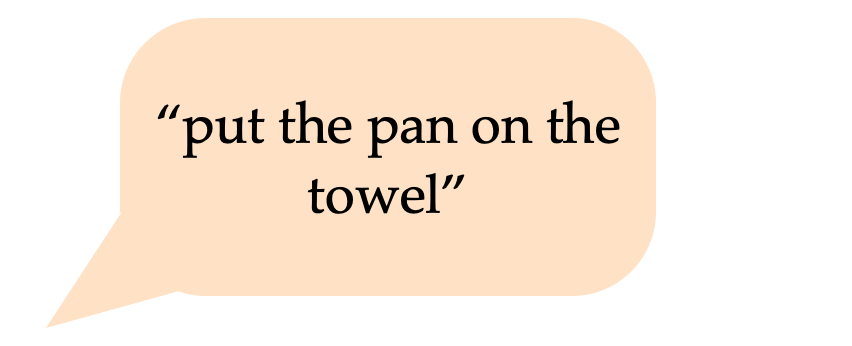
 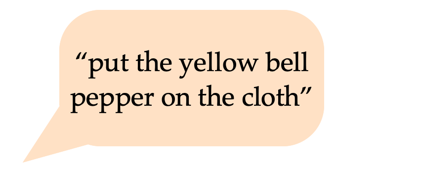
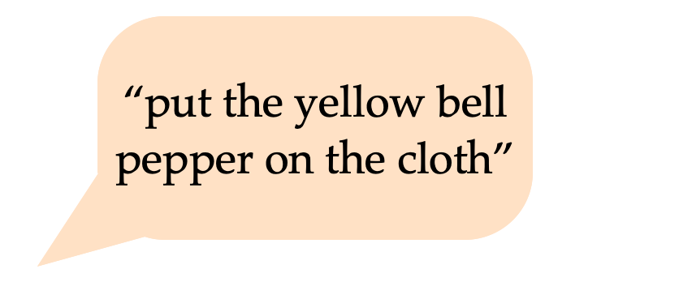
 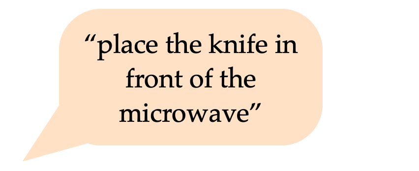
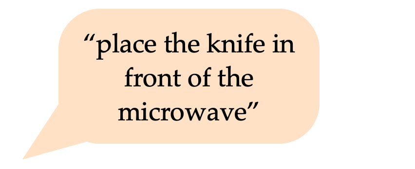
 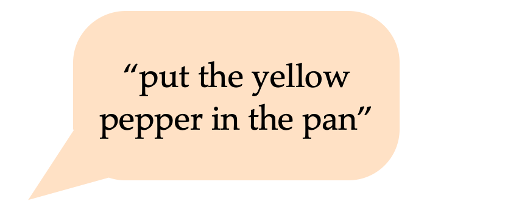
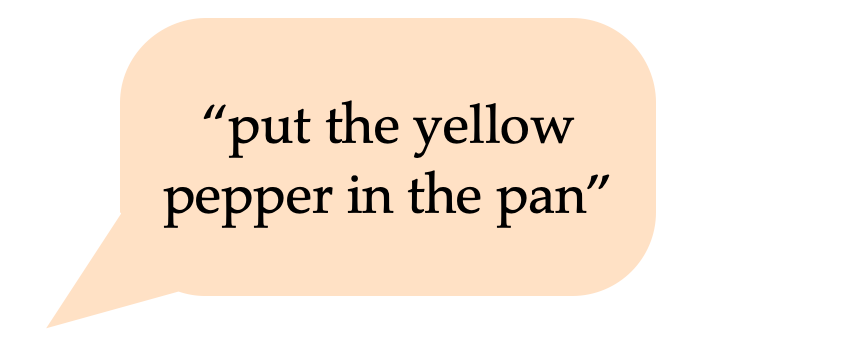
 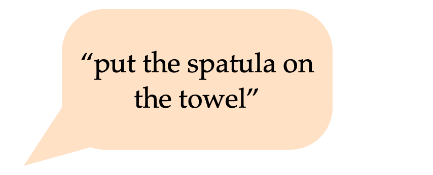
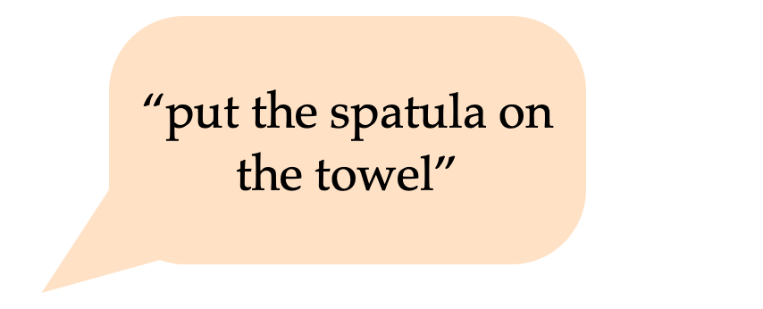
 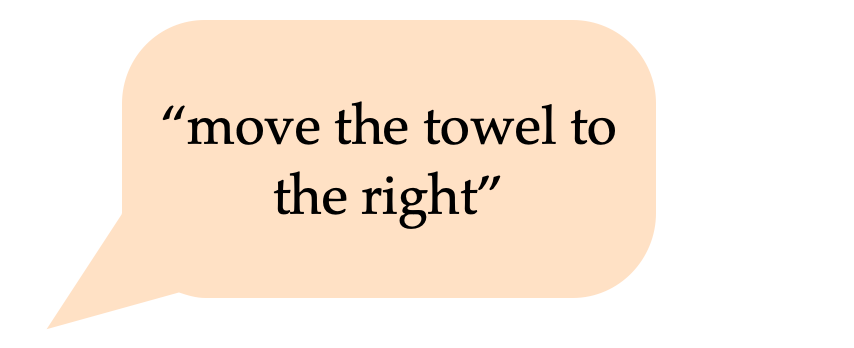
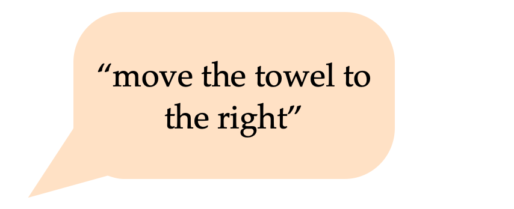
GRIF is a language-conditioned policy that can follow a variety of instructions in different scenes. It can robustly ground new instructions into scenes with just a small amount of language-annotated training data.
Left: We learn goal- and language-conditioned task representations from the labeled dataset and explicitly align them using contrastive learning.
Right: Conditioned on aligned task representations, the policy is trained on both labeled and unlabeled datasets.
GRIF outperforms past work on many language-conditioned tasks. The improvement is most significant in a new scene (A) where many courses of action are possible, and it is particularly important to ground the instruction to the correct goal.
GRIF's language-conditioned task representations show strong generalization to new instructions and scenes. We find that the representations of unseen instructions are closely aligned with images of the correct task, and this alignment holds across a variety of backgrounds and object combinations.